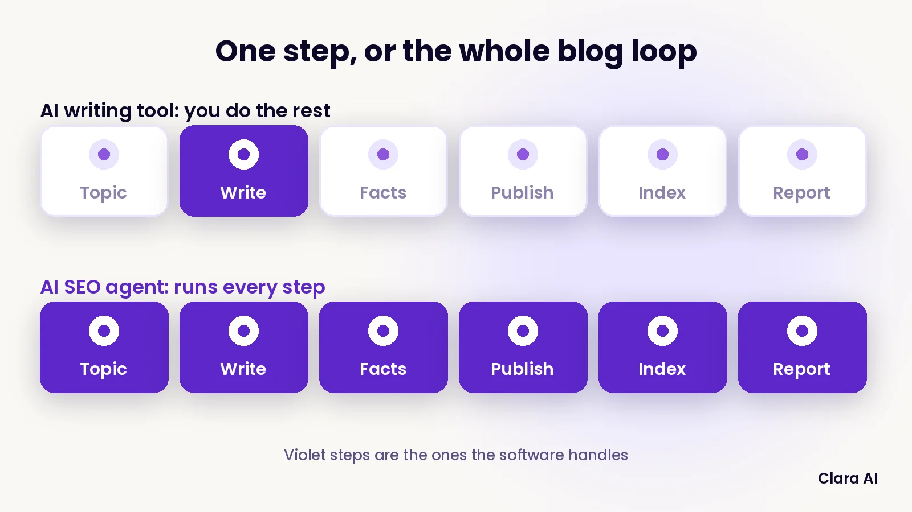

An AI SEO blog writer for B2B websites is software that drafts search-focused posts, and it comes in two kinds: a writing tool you run yourself, or an agent that runs the whole blog for you. A tool saves you typing time. An agent also picks topics, publishes, links, asks Google to index and reports. Which one fits depends on who on your team will do the work around the writing.
We run the agent version on our own site. Our AI SEO agent publishes on claraai.tech every day, and organic sessions grew +28% from 10–25 Oct vs 24 Sep–9 Oct 2026 (our own Google Analytics).
At its simplest, you type a keyword and it returns a draft. The better ones add an outline, headings built from what ranks today, and a score for how well the draft covers the topic. That is useful. It is also only one step of a blog.
A blog that brings B2B buyers is a loop that repeats every week:
A writing tool covers step two. Everything else stays with your team.

| AI writing tool | Done-for-you AI SEO agent | |
|---|---|---|
| Who starts the work? | You, every time | The agent, on a schedule |
| Who chooses topics? | You | The agent, with your buyers and facts as the guide |
| Who publishes and links? | You or your developer | The agent, on your site |
| Who asks Google to index? | You | The agent |
| What do you get weekly? | Whatever you track yourself | Clicks, rankings and real enquiries |
| Best for | A team with a marketer who has spare hours | A team with nobody to own the blog |
For a wider comparison with agencies, see AI SEO agent vs SEO agency vs SEO tool. If the idea of an agent is new, start with What is an AI SEO agent?
Google has said it rewards helpful, reliable content however it is produced, and that using automation mainly to manipulate search rankings goes against its spam policy. You can read this in Google's guidance on generative AI content.
In practice, the risk is not the AI. It is thin, generic posts that say what everyone else says. Three habits keep a B2B blog on the right side:
It fits B2B companies where each customer is worth a lot, buyers search before they call, and nobody has time to run the blog. Manufacturers, distributors, software firms, consultancies and B2B service companies are typical.
It is a poor fit if you need one article, sell to consumers through social media, or want volume without quality checks. It also needs patience: organic traffic builds over weeks, not days. Our AI SEO agent case study shows real dated numbers and what we would not read into them.
Our AI SEO Agent starts with a short conversation about your business, your buyers and the pages that matter most. We agree the facts, topics and tone once. Then the agent publishes on schedule and sends you simple weekly numbers.
If you also want buyers to hear from you directly, our AI LinkedIn Outreach Agent sends replies to you on WhatsApp. Clara AI is a team of 14 that builds AI agents for 19 businesses. Tell us what you sell and who you want to reach, and we aim to show you a first demo within 7 days.